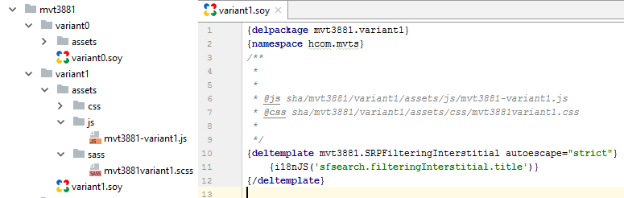

(GOOGLE)
CLOSURE TEMPLATES
BASICS, BEST PRACTICES, COMMON PITFALLS
Created by Andor Pénzes
WHAT ARE CLOSURE TEMPLATES?
- client- and server-side templating system
- simple syntax that is natural for programmers
- small components
BENEFITS OF USING CLOSURE TEMPLATES
- Convenience (separate application logic from display)
- Language-neutral
- Client-side speed (compiled to efficent JS)
- Easy to read
- Designed for programmers
- A tool, not a framework
- Battle-tested
- Secure
How to start?
- Java Runtime Environment (JRE) version >= 6
- SoyToJsSrcCompiler.jar — A standalone executable jar file that compiles Closure Templates into efficient JavaScript functions
- soyutils.js — A library of helper utilities. All JavaScript code that's generated by the template compiler use these utilities
- java -jar SoyToJsSrcCompiler.jar --outputPathFormat simple.js --srcs simple.soy
simple.soy
{namespace examples.simple}
/**
* Says hello to the world.
*/
{template .helloWorld}
Hello world!
{/template}
Compiling
java -jar SoyToJsSrcCompiler.jar --outputPathFormat simple.js --srcs simple.soy
simple.js
/**
* @fileoverview Templates in namespace examples.simple.
*/
if (typeof examples == 'undefined') { var examples = {}; }
if (typeof examples.simple == 'undefined') { examples.simple = {}; }
examples.simple.helloWorld = function(opt_data, opt_ignored) {
return 'Hello world!';
};
if (goog.DEBUG) {
examples.simple.helloWorld.soyTemplateName = 'examples.simple.helloWorld';
}
simple.html

More examples
parameters, calling templates, etc.
Basic types

Type conversion

Operators
-
- (unary) not -
* / % -
+ - (binary) -
< > <= >= -
== != -
and -
or -
?: (binary) ? : (ternary)
Commands
- namespace
- template
- @param
- if, elseif, else
- switch, case, default
- foreach, ifempty
- for
- call, param
- ...
Delegate templates
Delegate templates allow you to write multiple implementations of a template and choose one of them at render time.

MVT examples


- Template for every variant
- Risk of too many overlapping MVTs
Drawback
JS, CSS parameters
Questions?
Thank you for your time and have a nice day.